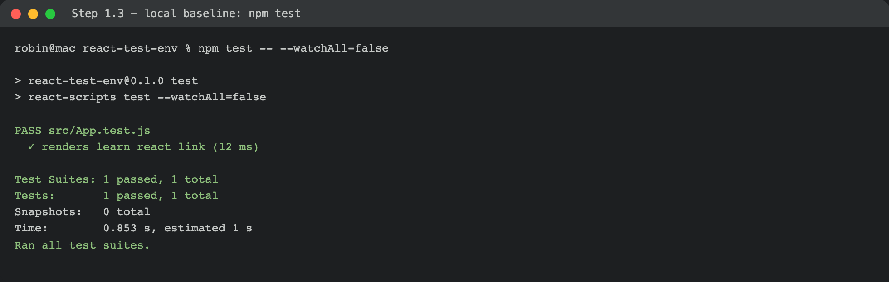
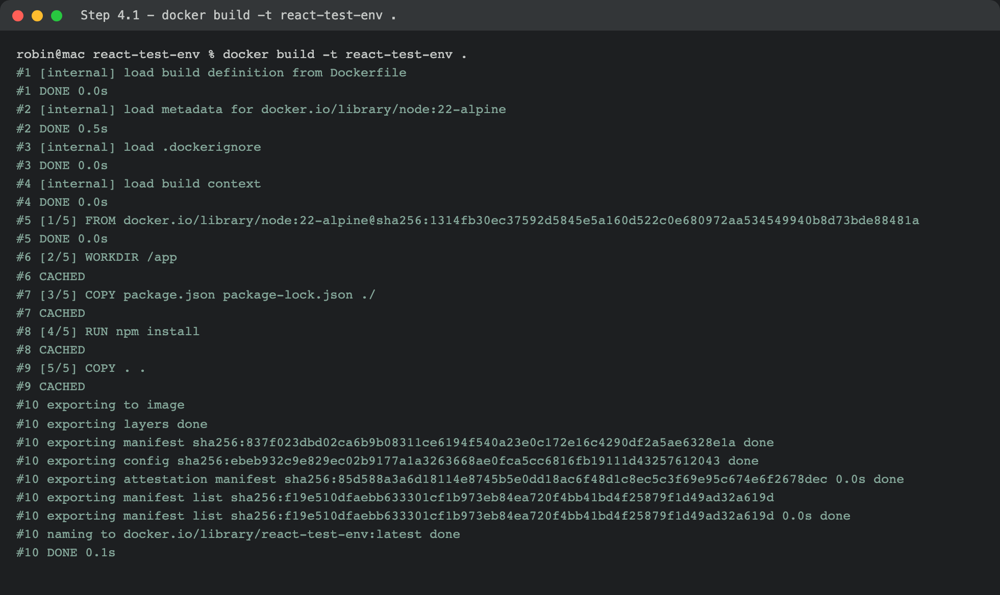
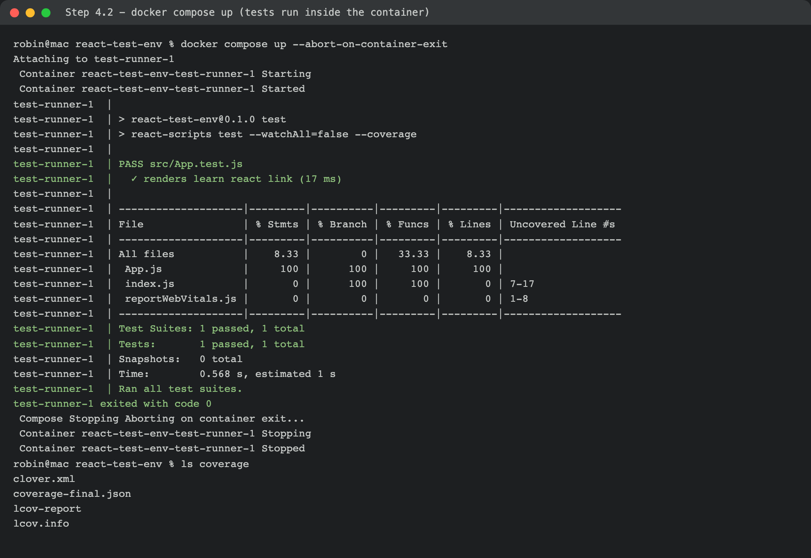

| Student | Yuandong Yang | Student ID | 000949205 |
|---|---|---|---|
| Yuandong.Yang@edu.sait.ca | Course | CPRG-305-B, Unit 9 Lab | |
| Date | November 16, 2026 | Project | react-test-env |
Docker Desktop was installed and running on macOS 26.5.1 before any build command was issued. The CLI and the Compose plugin both answered, which confirms the daemon is reachable from the terminal.
$ docker --version Docker version 29.5.3, build d1c06ef $ docker compose version Docker Compose version v5.1.4
The project was created from the standard React template, which ships with Jest and React Testing Library already wired into the test script.
$ npx create-react-app react-test-env $ cd react-test-env $ npm install
| Toolchain | Version |
|---|---|
| Node.js (host) | v24.16.0 |
| npm (host) | 11.13.0 |
| react-scripts (Jest + RTL) | 5.0.1 |
| Node.js (container base image) | node:22-alpine |
The suite was run on the host first. This baseline is what every later container run is compared against: if a test fails in the container but passes here, the fault is in the container configuration, not in the code.

npm test -- --watchAll=false reports Test Suites: 1 passed, Tests: 1 passed..dockerignoreThis file keeps the build context small and clean. The most important exclusion is node_modules: the host copy contains macOS/arm64 binaries that would be useless and potentially broken inside a Linux container, and copying it would slow the build and inflate the image. Build output, Git metadata, editor folders and OS noise are excluded for the same reason.
# Host dependencies: reinstalled inside the image so the container gets Linux binaries. node_modules # Build and test output: regenerated inside the container. build coverage # Version control and editor metadata: not needed to run the test suite. .git .gitignore .idea .vscode # OS and log noise. .DS_Store npm-debug.log* yarn-debug.log* yarn-error.log* # Docker files themselves are not needed inside the image. Dockerfile .dockerignore docker-compose.yml
DockerfileThe manifests are copied before the source code on purpose. Docker caches each instruction as a layer, so as long as package.json and package-lock.json are unchanged, the slow npm install layer is reused and only the source-copy layer is rebuilt.
# Test environment for the React application. # Base image: official Node.js LTS on Alpine keeps the image small while providing node and npm. FROM node:22-alpine # Dedicated working directory for the project inside the container. WORKDIR /app # Copy only the manifests first so Docker can cache the dependency layer. COPY package.json package-lock.json ./ # Install project and development dependencies (Jest and React Testing Library included). RUN npm install # Copy the remaining project contents (components, tests, public assets). COPY . . # CI=true makes react-scripts treat warnings as non-interactive output and exit after the run. ENV CI=true # Run the suite once, non-interactively, and write a coverage report to /app/coverage. CMD ["npm", "test", "--", "--watchAll=false", "--coverage"]
| Instruction | Why it is there |
|---|---|
FROM node:22-alpine | Official Node.js runtime on a minimal Linux base, so npm and the Jest toolchain are available without installing an OS by hand. |
WORKDIR /app | Every later instruction and the test command run from one absolute, predictable path. |
COPY package*.json then RUN npm install | Layer caching: dependencies are only reinstalled when the manifests change. |
COPY . . | Brings in components and test files, filtered by .dockerignore. |
ENV CI=true | Without it, react-scripts test would start an interactive watcher and the container would never exit. |
CMD ["npm","test","--","--watchAll=false","--coverage"] | Executable array form (no shell wrapper), runs the suite once and emits the coverage artifacts. |
Compose turns the whole run into a single command and, more importantly, declares the volume mount that makes the coverage report survive the container.
services:
test-runner:
# Build the image from the Dockerfile in this directory.
build: .
image: react-test-env
environment:
# Non-interactive run, required for a one-shot container.
CI: "true"
volumes:
# Link the host project folder to the container working directory so the
# coverage report written inside the container appears on the host.
- .:/app
# Keep the Linux node_modules installed in the image instead of the host copy.
- /app/node_modules
command: ["npm", "test", "--", "--watchAll=false", "--coverage"]
The second volume entry is the detail that makes the first one safe. Mounting .:/app hides everything the image placed at /app, including the Linux node_modules installed during the build. The anonymous volume /app/node_modules is mounted on top of it and preserves the container's own dependency tree, so the host folder supplies the source code while the container keeps the dependencies it installed for its own platform.
The -t flag tags the image with a readable name so later docker run and Compose commands can refer to it instead of an image hash. Every instruction completed without error, including the dependency install.

docker build -t react-test-env . finishing successfully. The CACHED markers on steps 2–5 are the layer cache from the first build.A quick run with --rm confirms the image works. The flag deletes the container as soon as the test process exits, so no stale environment is left behind and every run starts from the same image state.
$ docker run --rm react-test-env PASS src/App.test.js ✓ renders learn react link (15 ms) Test Suites: 1 passed, 1 total Tests: 1 passed, 1 total
The Compose run is the one that produces artifacts. Because of the volume mount, the coverage report Jest writes to /app/coverage inside the container appears in the host project folder after the container has stopped.

docker compose up: the suite runs inside test-runner-1, reports Test Suites: 1 passed, 1 total, the container exits with code 0, and ls coverage on the host shows the retrieved artifacts.| Observation | Local baseline (Step 1.3) | Container run (Step 4.2) |
|---|---|---|
| Test suites | 1 passed, 1 total | 1 passed, 1 total |
| Tests | 1 passed, 1 total | 1 passed, 1 total |
| Exit status | 0 | 0 (test-runner-1 exited with code 0) |
| Node.js version | v24.16.0 (host) | Node 22 LTS (pinned in the image) |
| Coverage artifacts | coverage/ in the project | clover.xml, coverage-final.json, lcov.info, lcov-report/ written back to the host |
The results are identical, which is the point of the exercise: the suite is no longer dependent on the versions that happen to be installed on one laptop. The container pins the Node.js version, installs dependencies from the lock file on a Linux base, and produces the same verdict that the host produced — and it does so without the developer having to match any of that by hand.
| Required artifact | File in this submission |
|---|---|
| Dockerfile | Dockerfile |
| .dockerignore | .dockerignore |
| docker-compose.yml | docker-compose.yml |
| Test log screenshot | evidence/03-docker-compose-up.png (Figure 3); Figures 1 and 2 are supporting evidence |
Configuration archive (no node_modules) | react-test-env.zip — 24 files, complete React source plus the three Docker files |